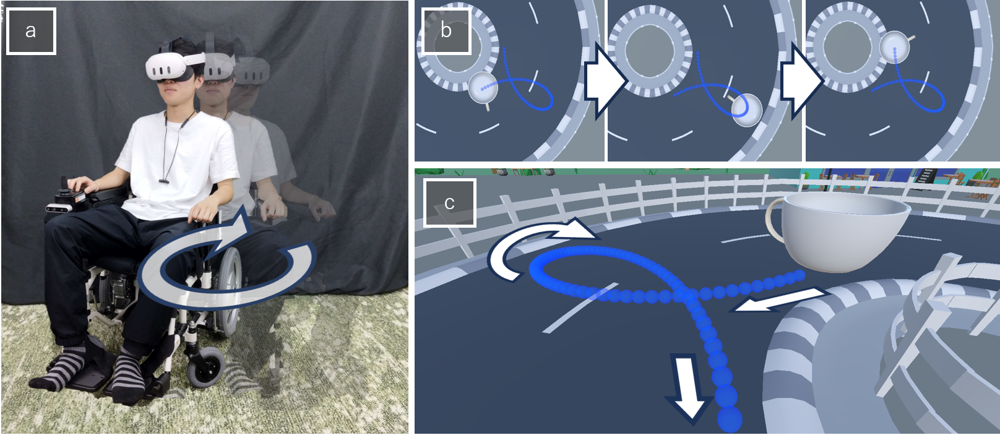
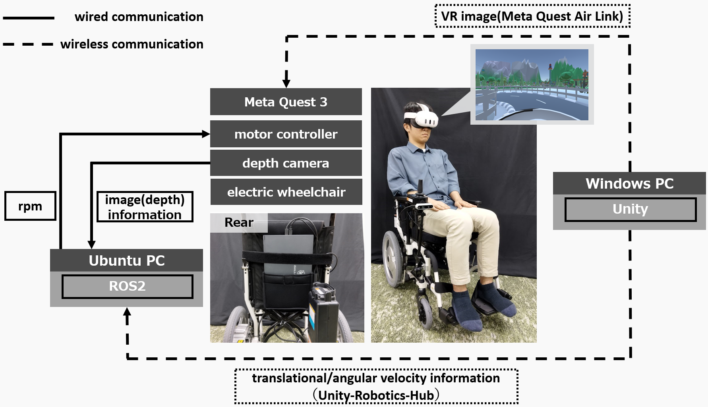

いつでもどこでもVRHMDと電動車椅子さえあれば、遊園地アトラクションのティーカップ体験ができるVRライドシステムを構築


近年，電動車椅子をモーションプラットフォーム（MP）として利用し，Head Mounted Display（HMD）に提示するVirtual Reality（VR）映像を組み合わせたVRライドを構築することで，搭乗者に臨場感のある体験を擬似的に提供する試みが様々に行われてきた．一方で，移動する物理的空間の大きさによる制約や安全面の配慮から，VRにおける仮想空間の移動量や速度を物理空間にそのまま対応づけることは困難である．そうした場合に，より臨場感のあるVR体験を設計するためには，物理空間およびMPの速度や安全の制約を考慮してVRライドの軌道を適切に設計する必要がある．本研究では，提供したいVR体験として遊園地のアトラクションの定番の一つであるティーカップの乗車体験を取り上げ，HMDと電動車椅子を組み合わせたVRライドを構築するにあたってその軌道に関する調査を行った．ティーカップアトラクションのVR映像に対して，VR映像内で発生する並進速度と回転速度をそれぞれ1倍，0.5倍，0倍した組み合わせである9種の電動車椅子の軌道を比較評価させた．その結果，ティーカップのVR映像内で発生する角速度を与えた電動車椅子の軌道は、並進速度を低減して提示した場合においても搭乗者の一致度の評価を大きく損ねない可能性が示唆された．
本研究の今後の課題として，ティーカップ体験における小円盤の運動も再現した軌跡と軌道の関係を調査し，小円盤の回転量を操作するユーザインタフェースを追加しつつ，軌跡および軌道にヨー軸回転を連続的に印加することが，リダイレクションの効果や知覚の変化にどのような影響をもたらすのかを明らかにしていきたい．